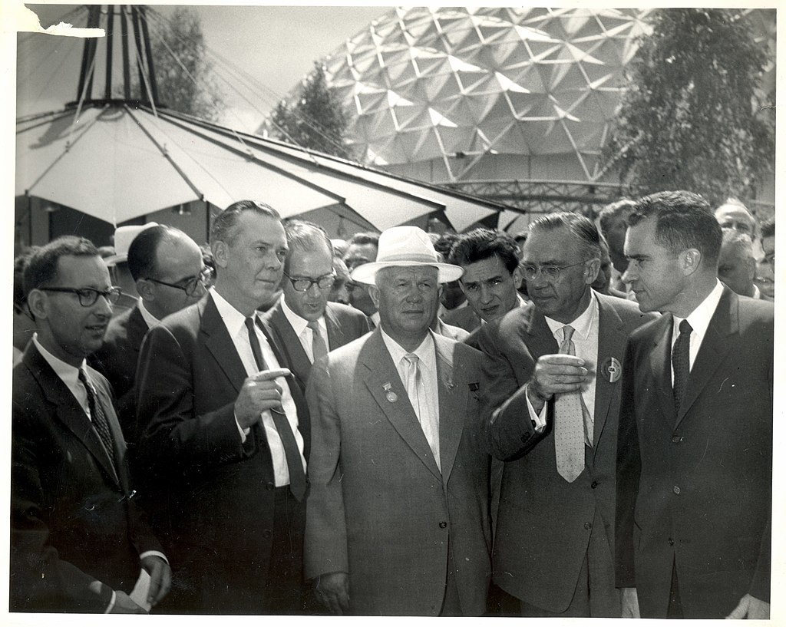

term 3
design ethics
technological determinism

Technology is a part of our existence, it is not neutral, not does it determine us. We cannot be human without technology anymore, its almost impossible to avoid, like we are living in the Technosphere. Also during designing things we use technology in different ways, for example we use trees to protect the streets or design for example toothbrushes because in our society we said teeth hygiene is important. Technologies not has to be high tech, also other artifacts and processes are included in technology. Neutrality (To have no impact in the world) is in the middle of soft determinism (using technologies, but know they are affecting) and hard determinism (make us be how we are). Determinism is a philosophical view according to which all events are predetermined by natural law and causality and technological determinism like Karl Marx said: "The hand-mill gives you society with the feudal lord; the steam-mill society with the industrial capitalist."
guiding questions
1. Do our projects moralise implicitly or explicitly? How? The moral is to focus again on details and few things, rather than always wanting more, more next love and respect. You should enjoy your time and the moment more in order to understand things better.
2. What values are we inscribing or we want to inscribe in the design? What are the value conflicts that emerge? Optimism, Self-reliance, Minimalism, Relaxation & Influence
3. How are these values materialised into a design? Slow products that stimulate or force the user to slow down dentifying ethically relevant issues
4. Does something feel not OK? What is it? Why does is feel not OK? Maybe it is too slow and the sometimes low success rate, for example when external conditions don't fit, might make you stop.
5. Could this design damage or harm someone or a group or something worth protecting? In what way? Under which circumstances? I don't think that low tech products could harm, as they tend to be relaxing. But there could be frustration if it cannot be used.
6. Can it be unevenly beneficial to some and harmful to other? In what way? Under which circumstances? It might be easier for people with a garden and a lot of space than people who live in a flat without a balcony.
types of ethics


Technologies are multicable. They have developed light bulbs that use less energy and are more sustainable but now we light them non-stop and light up buildings because "we can", it costs little energy and in the end uses just as much energy.It is also called Jerevon's Pradox (according to which technical progress that allows the more efficient use of a raw material ultimately leads to an increase in the use of that raw material instead of a decrease). Herbert Simon 1996 said: “Design is concerned with how things ought to be”. Products, which influence human action or socially responsible behaviour, design seeks to influence behaviour in a particular way. For example the flight in the pissoir, which helps people being concentrated peeing on the animal which creates less dirt. Then there are four other ways to design: decisive, coercive (anti-theft devices, metro with the entrance gate, where you need a ticket to enter, anti-sleep areas for homeless people), persuasive (you get informations, for example how much energy was produced to make the product or how many bikes you could place instead of one car) or seductive (in a playful way).
Ethics are an activity it’s not a thing. There are guiding questions like: What is the right thing to do? What actions are morally justifiable? What is good? What kind of person I want to be? But nothing is black and white. You have different types of ethics:
• Deontology (Ethics of principles), which could be in a religious way (bible) or a non religious way (Emanual Kant), which is about lying, steeling, killing, manipulating and so on. Ethics of principles are difficult to apply, because we don’t know what is right and wrong and also too rationalist, because they just go with the rules.
• Consequentioalism (Ethics of effects), but its difficult to apply (how do you calculate that?) And also it can be used to justify justifies. It could also be experiments between life and death, like the trolley experiment.

• Care ethicsm like Feminism, rasism, sexism. “Care seems to me to be the most basic of moral values. Without care as an empirically describable practice, we cannot have life at all since human beings cannot survive without it. Without some level of caring concern for other human beings, we cannot have any morality. These requirements are not just empirical givens. In every context of care, moral evaluations are needed. Then, without some level of caring moral concern for all other human beings, we cannot have a satisfactory moral theory” (Virginia Held)
guiding questions 2
1. Imagine your solution was analog and not digital. How would the experience be?
2. Could your solution beapart of an episode in Black Mirror (a dysto-pian science fictionseries)? Try to imagine the plot
3. Does your solution create increased inequality? Why / why not?
submission: effects
1. positive: go out of the comfort zone, using your spare time different
2. negative: not interesting enough, nothing completely new
3. Foreesable: too slow, people want to make everything fast more efficient, because they don´t have time (work, childrens, ...)
other effects: Direct and indirect, Unequal effects for different actors, Effects on relationships between actors or Effects on different levels: individual
the goods of design
This class was about an iquiry into design professional ethics. Not everyone is a designer, but there are people who can engage in the practice of design. In design as a professional practice there can be different types like darc patterns. There is a lot of corruption also in Europe in big companies and also hospitals, but sometimes people lye because they don´t know it and make it by mistake. You can also have different kind of codes of ethics: Safety and legal standard have to be ruled in design but the rest you can follow but you don’t need to, ethics are more than compliances. We don’t have this checklist to design that’s why design could also destroy because it could get into the market quiet fast and nobody can control or change it anymore. “We act rightly ‘when the time comes’ not out of strength of will but out of the quality of our usual attachments and with the kind of energy and discernment which we have available.” Iris Murdoch. Also there was a famous kitchen debate on an American exhibition 1959 in Moscow about the pros and cons of the capitalism and communism from Richard Nixon und Nikita Chruschtschow. The goods of design you can get through practises, which can be internal and external. External goods are crucial and internal good: you can only obtain through designing. Iris Murdoch
submission: values
Together with classmates we are creating a community, where we are producing low tech products about the topics growing and cooking and generating energy. The name is “Slow lab”, which is about a lab where you create things slowly and conscious along the slow movement.
values for my project Creativity (The use of imagination or original ideas to create something; being resourceful.) Creativity is one of the big values of Slow lab. We want to attract people to get more creative and try things out. Also we need to be creative in creating new solutions and ideas for low tech products, where we try to use less water, generate our own energy and use materials which are assessable and cheap.
Inclusivity (An intention or policy of including people who might otherwise be excluded or marginalised.) With our open-source low tech projects we want to attract everyone and make it easy for everyone to imitate. We are using cheap materials, which you could have at home or find them in different kind of stores.
Accessibility (The quality of being able to be reached, easy to obtain or use or easily understood.) This is also a big value for us because we want to make a platform to be able to imitate the projects at home. We are starting to create a website, where we want to upload understandable tutorials with pictures, the process and a forum to exchange ideas. Also we created a Instagram to show our projects with links to the website and a discord with different specific topic channels to discuss ideas and futureplans.
Tranquillity (The state of being free from tension and anxiety; being free from disturbance.) This is the basis of the Slow lab. We created the organisation focusing on the slow movement. Our purpose is to slow things down, so people getting more conscious about natural processes and the importance of nature.
Curiosity (A strong desire to know or learn something, inquire into or discuss something in detail.) We try to explore each time something new and are open for new and old technologies and methods to use them in different low tech products.
Autonomy (The right or condition of self-government; freedom from external control or influence.) We want to create this place to be less independent, not only while producing the products but also to generate your own energy to be less dependent on suppliers and pay less money.
Sustainability (Avoidance of the depletion of natural resources to maintain an ecological balance.) We are using recyclable materials, producing the tools without using glue and are mostly not using machine where you need a lot of energy for. Also, we are generating our own energy from the sun and rotation to use them for example for cooking food, charging phones or growing vegetables.
Community (Sharing or having certain attitudes and interests in common, belonging to a group.) We are currently building a community with people around Barcelona in the social media channels Instagram and Discord. These platforms we use to exchange ideas and have discussions about topics. Also, we are organising events and workshops where we meet new people and try to connect.
values for the project sponsor Safety (The condition of being protected from or unlikely to cause danger, risk, or injury.) There could be a possibility people get hurt will bring from the sun in the ovens, also there is a possibility to get an electric shock from the wires of the solar panels etc. In general people could hurt themselves while using the products or rebuilding them at home, why we need to prepare easy understandable tutorials and a forum to talk in.
Respect (Having due regard for the feelings, wishes, or rights of others.) While working and living together I think respect is one of the most important rules. There should be the acceptance of other opinions, kindly words, no judgement and no insults.
Honesty (Being free of deceit; being truthful and sincere, the quality of having strong moral principles.) Trust (Firm belief in the reliability, truth, or ability of someone or something.) To trust each other it's important to be honest at any time. You know what you what you get and how to deal with it.
values for different actors Community (Sharing or having certain attitudes and interests in common, belonging to a group.) Creating a community helps people also to be part of a group and exchange ideas. People are feeling also maybe less alone and connected with people with similar interests, also to get to know new people.
Freedom (The power or right to act, speak, or think as one wants, the power of self-determination.) For the actors its important to be able to speak freely and talk about their issues and thoughts. With the created platforms we want to create a forum to speak, where no one should be excluded and left out.
Respect (Having due regard for the feelings, wishes, or rights of others.) Not only for our projects but also for the actors it's important to get respect and be respectful to each other.
Equity (Being fair such that peoples’ needs guide the distribution of opportunities for well-being.) Being fair to everyone is important. In the end we want to attract everyone and so everyone feels comfortable.
conflicts between values First innovation against sustainability could be difficult sometimes, also experimenting and trying new things could be not sustainable.
Term 3